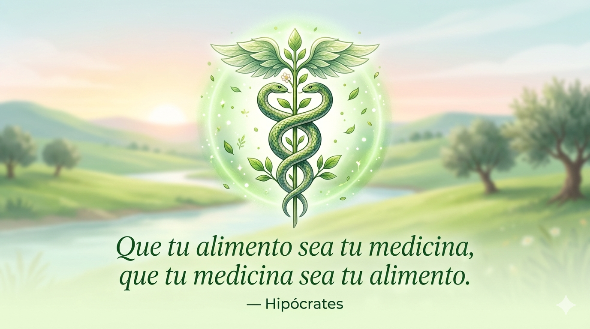

AAP
Mental
Inicio
Explorar ▾
Nutrición
Calculadora IMC
Grounding

"Que tu alimento sea tu medicina,
que tu medicina sea tu alimento."
— Hipócrates
Pasos para la preparación perfecta
Lava bien todas las frutas y verduras.
Trocea e introduce en la licuadora con el agua.
Bebe de inmediato para aprovechar los nutrientes.
×
Lavar:
Desinfecta bien todas las frutas y verduras.
Trocear:
Corta los ingredientes en trozos pequeños para no forzar la licuadora.
Licuar:
Procesa con el agua indicada hasta que sea una mezcla homogénea.
Consumir:
¡Bebe de inmediato! Así aprovechas el 100% de las vitaminas.